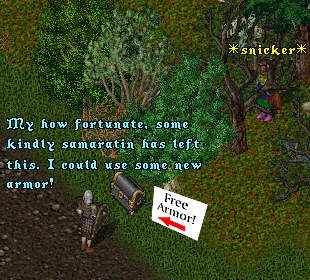
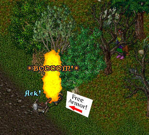
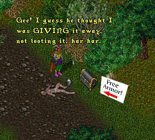
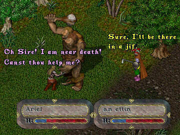
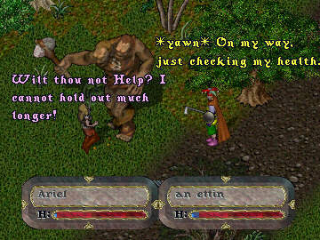
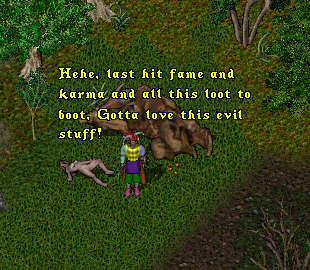
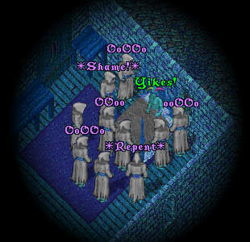

Episode 83: "Something Wicked This Way Comes! (Part 2). Last week ImaNewbie embarked on his reign of terror ruthlessly killing a poor newbie and five people at a picnic. This week it seems he has become even more diabolical resorting to 'dirty tricks'. As this episode opens we find ImaNewbie hiding behind a tree about to ensnare another victim. Make sure you have seen episodes #81 and #82 first.



Hmmmn, the old trapped chest trick, how many of us have
been caught with that one. But wait, I hear the plaintive
cry of a damsel in distress. Surely even the new 'evil'
ImaNewbie will not be able to resist coming to the rescue.



Looks like I was wrong again, but then ... that night as
ImaNewbie is asleep in his bed, suddenly he awakes to find
his room bathed in a strange eerie light and the bed
surrounded with the spectres of those poor souls he so
recently dispatched to the hereafter.
